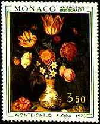

|
|
Click the first letter of the country from the list above to jump to the appropriate section of the glossary. A B C D E F G H I J K L MN O P Q R S T U V W Y Z
|
 |
Please click here to find the URLs of the postal authorities from different countries.
ALAND
ALBANIA
ARGENTINA
AUSTRIA
AUSTRALIA
BELGIUM
BERMUDA
BREZIL
BULGARIA
CANADA
CHILE
CROATIA
CYPRUS
CYPRUS TURK
CZECH REPUBLIC
DENMARK
EGYPT
FAEROE ISLANDS
FRANCE
FIJI
FINLAND
GERMANY
GIBRALTAR
GREECE
GREENLAND
HUNGARY
ICELAND
IRLANDE
ISRAEL
ITALY
JAMAICA
JAPAN
LITHUANIA
LIECHTENSTEIN
LUXEMBOURG
MALTA
MADEIRA
MAURITIUS
MONACO
NETHERLANDS
NEW CALEDONIA
NEW ZEALAND
NORWAY
PARAGUAY
POLAND
POLYNESIA
PORTUGAL
ROMANIA
RUSSIA
SAN MARINO
SLOVAKIA
SLOVENIA
SOUTH AFRICA
SPAIN
SRI LANKA
SWEDEN
SWITZERLAND
TAIWAN
TONGA
TUNISIA
UNESCO
UNITED NATIONS
USA
VATICAN
WALLIS ET FUTUNA
|